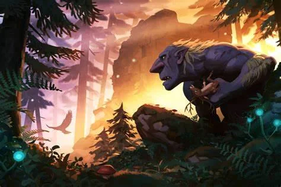
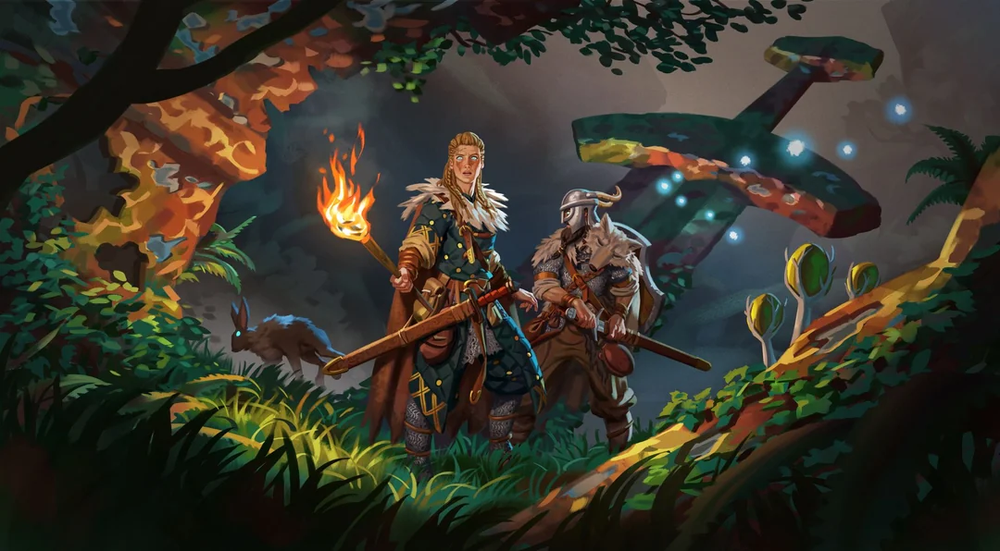

Valheim
Przygoda w Świecie Wikingów

Matt
19.09.2024
Valheim
Gaming
Valheim to gra survivalowa osadzona w mitologicznych klimatach nordyckich, która w krótkim czasie podbiła serca milionów graczy na całym świecie. Zadebiutowała we wczesnym dostępie 2 lutego 2021 roku i została opracowana przez szwedzkie studio Iron Gate AB, a wydana przez Coffee Stain Publishing. Gra zdobyła ogromną popularność dzięki unikalnemu połączeniu survivalu, budowania oraz eksploracji otwartego świata inspirowanego nordyckimi mitami. Poniżej przybliżam najważniejsze elementy, które składają się na sukces Valheim.

Akcja Valheim osadzona jest w dziesiątej krainie, tytułowym Valheimie – mistycznym miejscu, które znajduje się na obrzeżach Drzewa Światów Yggdrasil. Gracz wciela się w wikinga, który zostaje wysłany przez Odyna do tego miejsca, aby udowodnić swoją wartość. Celem rozgrywki jest pokonanie mitycznych bossów reprezentujących dawne siły chaosu, co ma przywrócić porządek w krainie. Aby to osiągnąć, gracz musi nie tylko walczyć, ale również zbierać surowce, budować bazy oraz odkrywać sekrety tajemniczego świata.
Valheim to przede wszystkim gra survivalowa, która stawia na balans pomiędzy trudnością a przyjemnością rozgrywki. W przeciwieństwie do wielu innych gier tego gatunku, Valheim nie zmusza gracza do stałej walki o przetrwanie. Wymagania związane z jedzeniem czy zdrowiem są obecne, ale nie są przytłaczające – jedzenie poprawia regenerację zdrowia i wytrzymałości, ale jego brak nie prowadzi do śmierci bohatera.
Kluczowym elementem gry jest budowanie. System budowy w Valheim jest intuicyjny, a jednocześnie oferuje ogromne możliwości. Gracze mogą tworzyć od prostych szałasów, przez imponujące twierdze, aż po całe osady. Wszystko to odbywa się w proceduralnie generowanym świecie, który składa się z różnorodnych biomów, takich jak lasy, góry, bagna czy oceany. Każdy z biomów ma unikalne surowce, przeciwników oraz warunki pogodowe, co dodaje głębi eksploracji.
W Valheim walka odgrywa istotną rolę, a jej mechanika przypomina systemy znane z gier akcji. Gracz może korzystać z różnych typów broni – od mieczy i młotów, przez łuki, po broń obuchową czy magiczną. Każdy przeciwnik wymaga innej taktyki, a bossowie to prawdziwe wyzwanie, które wymaga solidnego przygotowania, zarówno w kwestii ekwipunku, jak i strategii.
Przeciwnicy w grze są zróżnicowani – od zwykłych potworów, takich jak greydwarfowie, po mityczne stworzenia, jak smoki i trollowie. Z każdym kolejnym biomem przeciwnicy stają się coraz silniejsi, co wymusza na graczach stopniowe ulepszanie ekwipunku oraz technologii.
Pomimo tego, że Valheim nie wyróżnia się fotorealistyczną grafiką, wielu graczy docenia jej specyficzny, stylizowany wygląd. Świat gry jest pełen surowych krajobrazów, które idealnie oddają klimat mitycznej Skandynawii. Niski poziom szczegółowości tekstur jest rekompensowany przez piękne oświetlenie, dynamiczne zmiany pogody oraz zjawiskowe efekty atmosferyczne, takie jak mgła, burze czy zorza polarna.
Valheim to gra, która w umiejętny sposób łączy elementy survivalu, budowania oraz eksploracji w świecie inspirowanym nordycką mitologią. Proceduralnie generowany świat, dynamiczna walka, różnorodność biomów i przeciwników oraz możliwość kooperacyjnej rozgrywki sprawiają, że każdy gracz znajdzie tu coś dla siebie. Pomimo swojej relatywnie prostej oprawy graficznej, Valheim urzeka klimatem i wciąga na długie godziny, oferując wyjątkowe wrażenia w świecie wikingów.